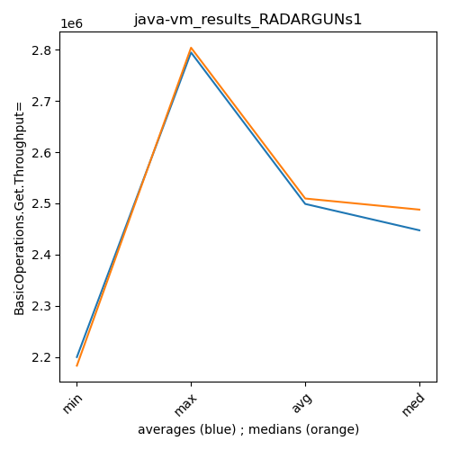
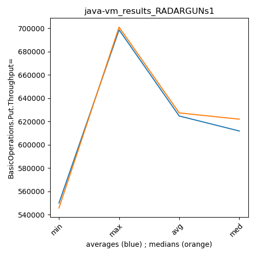
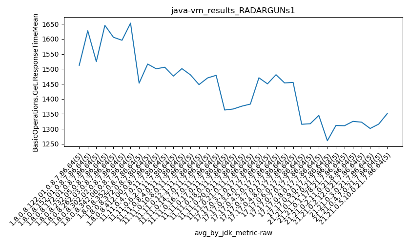
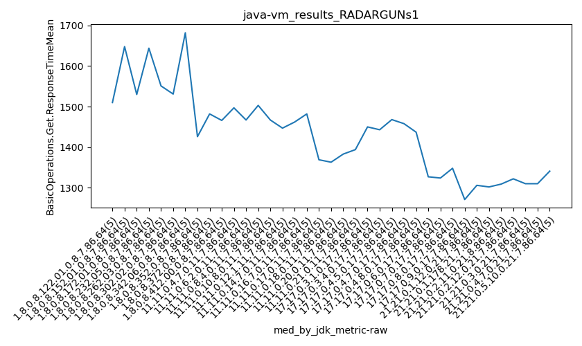

java- RADARGUNs1
Context at bottom
/home/jvanek/git/benchmarks-in-nested-virtualisation-toolchain/final_results/vm_results/vm_results_RADARGUNs1
java-
RADARGUNs1
vm_results_RADARGUNs1
- vm_results_RADARGUNs1 - throughput get
- vm_results_RADARGUNs1 - throughput put
- vm_results_RADARGUNs1 - response mean time get
- vm_results_RADARGUNs1 - response mean time put
vm_results_RADARGUNs1 - throughput get
Expected number of java- JDKs: 37
1st avgmed_alljdks_metric:
/home/jvanek/git/benchmarks-in-nested-virtualisation-toolchain/final_results/result_processing.py /home/jvanek/git/benchmarks-in-nested-virtualisation-toolchain/final_results/vm_results/vm_results_RADARGUNs1 BasicOperations.Get.Throughput= False
values: [2250074, 2335655, 2278778, 2194686, 2241097, 2182818, 2334781, 2167816, 2281262, 2136423, 2363460, 2273933, 2247292, 2339254, 2382424, 2143334, 2256606, 2223032, 2287073, 2263956, 2208876, 2269332, 2040746, 2227512, 2251815, 2321928, 2369766, 2170508, 2061302, 2363452, 2230776, 2224270, 2316974, 2269090, 2291161, 2617788, 2669630, 2612401, 2380125, 2470694, 2461124, 2579142, 2494026, 2372904, 2504276, 2619351, 2429509, 2477303, 2560787, 2547131, 2449285, 2329383, 2338917, 2308972, 2395099, 2388496, 2388079, 2424201, 2376561, 2361118, 2344816, 2408864, 2372659, 2303561, 2348213, 2395088, 2452206, 2382540, 2469913, 2420158, 2336738, 2433584, 2397569, 2402004, 2421420, 2525050, 2360246, 2349138, 2296720, 2408034, 2389714, 2363871, 2364356, 2451254, 2450100, 2682630, 2678225, 2678690, 2647133, 2622418, 2640262, 2427829, 2664922, 2686638, 2681318, 2684795, 2709258, 2414879, 2714592, 2678886, 2656245, 2680266, 2645707, 2354484, 2748843, 2452264, 2419120, 2483900, 2478287, 2402987, 2507708, 2435303, 2504828, 2487703, 2196799, 2180098, 2384803, 2334137, 2489969, 2404653, 2135148, 2153334, 2453534, 2539158, 2447005, 2195392, 2174670, 2447522, 2135845, 2474088, 2751204, 2778316, 2706960, 2728552, 2719872, 2599807, 2582809, 2776386, 2573735, 2589686, 2746780, 2535706, 2743291, 2731312, 2628946, 2900286, 2778862, 2802040, 2816259, 2676024, 2845304, 2734892, 2783198, 2751946, 2847584, 2759068, 2656570, 2815753, 2833962, 2739762, 2849978, 2778466, 2708532, 2782034, 2816405, 2730216, 2750689, 2686000, 2719087, 2698073, 2830291, 2812118, 2741644, 2739464, 2803999, 2687291, 2793866, 2651913, 2548481, 2633372, 2697296, 2722066, 2625593, 2605459, 2710591]

Expected number of iterations: 5
final number of values: 185 out of 185
Pass rate: 100.0%
values: (2040746, 2900286, 2498807.843243243, 2469913)

** accuracy from all jdks and runs
more is better
MIN: 2040746
MAX: 2900286
AVG: 2498807.843243243
MED: 2469913
Relative differences 1:
MIN-MAX: 30.0 %
MIN-AVG: 18.0 %
MIN-MED: 17.0 %
MAX-MIN: -42.0 %
MAX-AVG: -16.0 %
MAX-MED: -17.0 %
AVG-MED: -1.0 %
stored to java-.properties. sort | uniq that!
2nd avgmed_by_jdk_metric:
values: [2260058.0, 2220620.0, 2321272.6, 2234800.2, 2199656.2, 2257391.2, 2266454.2, 2550127.6, 2482294.4, 2526816.2, 2364331.2, 2387691.0, 2355622.6, 2423981.0, 2398263.0, 2387837.6, 2403859.0, 2661819.2, 2620193.8, 2640482.0, 2617109.0, 2447311.6, 2426468.2, 2358732.0, 2345635.8, 2285503.4, 2736980.8, 2624484.6, 2677207.0, 2794694.2, 2792584.8, 2761023.0, 2787083.0, 2716813.0, 2785503.2, 2662984.6, 2672201.0]
values: [2250074, 2182818, 2339254, 2256606, 2227512, 2321928, 2269090, 2612401, 2494026, 2547131, 2338917, 2388079, 2348213, 2420158, 2402004, 2360246, 2389714, 2678225, 2664922, 2684795, 2656245, 2452264, 2487703, 2384803, 2447005, 2195392, 2728552, 2589686, 2731312, 2802040, 2783198, 2759068, 2782034, 2719087, 2803999, 2651913, 2697296]

values: (2199656.2, 2794694.2, 2498807.843243243, 2447311.6)
values: (2182818, 2803999, 2509397.5675675673, 2487703)

** accuracy from all jdks where runs were avged
more is better
MIN: 2199656.2
MAX: 2794694.2
AVG: 2498807.843243243
MED: 2447311.6
Relative differences 1:
MIN-MAX: 21.0 %
MIN-AVG: 12.0 %
MIN-MED: 10.0 %
MAX-MIN: -27.0 %
MAX-AVG: -12.0 %
MAX-MED: -14.0 %
AVG-MED: -2.0 %
stored to java-.properties. sort | uniq that!
** accuracy from all jdks where runs were medianed
more is better
MIN: 2182818
MAX: 2803999
AVG: 2509397.5675675673
MED: 2487703
Relative differences 1:
MIN-MAX: 22.0 %
MIN-AVG: 13.0 %
MIN-MED: 12.0 %
MAX-MIN: -28.0 %
MAX-AVG: -12.0 %
MAX-MED: -13.0 %
AVG-MED: -1.0 %
stored to java-.properties. sort | uniq that!
vm_results_RADARGUNs1 - throughput put
Expected number of java- JDKs: 37
1st avgmed_alljdks_metric:
/home/jvanek/git/benchmarks-in-nested-virtualisation-toolchain/final_results/result_processing.py /home/jvanek/git/benchmarks-in-nested-virtualisation-toolchain/final_results/vm_results/vm_results_RADARGUNs1 BasicOperations.Put.Throughput= False
values: [562470, 583939, 569698, 548652, 560290, 545652, 583739, 541996, 570253, 534075, 590871, 568453, 561814, 584836, 595604, 535828, 564136, 555767, 571824, 566031, 552160, 567356, 510215, 556847, 562994, 580449, 592432, 542645, 515332, 590853, 557721, 556106, 579258, 567216, 572819, 654408, 667501, 653093, 594972, 617724, 615290, 644810, 623490, 593212, 626109, 654793, 607395, 619306, 640156, 636774, 612328, 582359, 584766, 577219, 598722, 597100, 597007, 606067, 594079, 590293, 586215, 602240, 593228, 575898, 587088, 598757, 613097, 595613, 617451, 605098, 584127, 608419, 599300, 600500, 605387, 631221, 590072, 587289, 574159, 602060, 597469, 590981, 591095, 612774, 612447, 670702, 669577, 669738, 661793, 655556, 660106, 606979, 666194, 671672, 670284, 671199, 677323, 603742, 678646, 669698, 664010, 670068, 661440, 588559, 687211, 612992, 604752, 620923, 619644, 600728, 626922, 608789, 626205, 621959, 549199, 545012, 596167, 583527, 622495, 601194, 533757, 538354, 613389, 634818, 611702, 548864, 543645, 611874, 534006, 618514, 687878, 694528, 676691, 682122, 679962, 649970, 645675, 694116, 643504, 647339, 686683, 633882, 685806, 682925, 657214, 725051, 694632, 700457, 703996, 669059, 711330, 683695, 695900, 688020, 711874, 689685, 664108, 703981, 708554, 684955, 712484, 694584, 677144, 695514, 704083, 682561, 687665, 671455, 679757, 674632, 707645, 702965, 685380, 684811, 700981, 671788, 698441, 662959, 637074, 658280, 674352, 680563, 656381, 651336, 677698]

Expected number of iterations: 5
final number of values: 185 out of 185
Pass rate: 100.0%
values: (510215, 725051, 624699.145945946, 617451)

** accuracy from all jdks and runs
more is better
MIN: 510215
MAX: 725051
AVG: 624699.145945946
MED: 617451
Relative differences 1:
MIN-MAX: 30.0 %
MIN-AVG: 18.0 %
MIN-MED: 17.0 %
MAX-MIN: -42.0 %
MAX-AVG: -16.0 %
MAX-MED: -17.0 %
AVG-MED: -1.0 %
stored to java-.properties. sort | uniq that!
2nd avgmed_by_jdk_metric:
values: [565009.8, 555143.0, 580315.6, 558717.2, 549914.4, 564342.2, 566624.0, 637539.6, 620582.2, 631684.8, 591078.8, 596909.2, 588933.8, 606003.2, 599546.6, 596960.2, 600953.2, 665473.2, 655047.0, 660121.6, 654257.6, 611807.8, 606614.8, 589679.0, 586404.0, 571380.6, 684236.2, 656120.8, 669302.0, 698639.0, 698163.8, 690256.6, 696761.8, 679214.0, 696356.4, 665708.4, 668066.0]

values: [562470, 545652, 584836, 564136, 556847, 580449, 567216, 653093, 623490, 636774, 584766, 597007, 587088, 605098, 600500, 590072, 597469, 669577, 666194, 671199, 664010, 612992, 621959, 596167, 611702, 548864, 682122, 647339, 682925, 700457, 695900, 689685, 695514, 679757, 700981, 662959, 674352]

values: (549914.4, 698639.0, 624699.1459459459, 611807.8)
values: (545652, 700981, 627341.027027027, 621959)

** accuracy from all jdks where runs were avged
more is better
MIN: 549914.4
MAX: 698639.0
AVG: 624699.1459459459
MED: 611807.8
Relative differences 1:
MIN-MAX: 21.0 %
MIN-AVG: 12.0 %
MIN-MED: 10.0 %
MAX-MIN: -27.0 %
MAX-AVG: -12.0 %
MAX-MED: -14.0 %
AVG-MED: -2.0 %
stored to java-.properties. sort | uniq that!
** accuracy from all jdks where runs were medianed
more is better
MIN: 545652
MAX: 700981
AVG: 627341.027027027
MED: 621959
Relative differences 1:
MIN-MAX: 22.0 %
MIN-AVG: 13.0 %
MIN-MED: 12.0 %
MAX-MIN: -28.0 %
MAX-AVG: -12.0 %
MAX-MED: -13.0 %
AVG-MED: -1.0 %
stored to java-.properties. sort | uniq that!
vm_results_RADARGUNs1 - response mean time get
Expected number of java- JDKs: 37
1st avgmed_alljdks_metric:
/home/jvanek/git/benchmarks-in-nested-virtualisation-toolchain/final_results/result_processing.py /home/jvanek/git/benchmarks-in-nested-virtualisation-toolchain/final_results/vm_results/vm_results_RADARGUNs1 BasicOperations.Get.ResponseTimeMean True
values: [1510, 1489, 1451, 1587, 1524, 1526, 1572, 1648, 1666, 1726, 1530, 1533, 1497, 1567, 1496, 1698, 1801, 1564, 1644, 1521, 1551, 1524, 1752, 1518, 1684, 1531, 1502, 1786, 1640, 1520, 1748, 1757, 1595, 1483, 1682, 1426, 1382, 1426, 1578, 1451, 1636, 1407, 1443, 1482, 1614, 1379, 1677, 1439, 1466, 1542, 1480, 1497, 1521, 1550, 1481, 1480, 1467, 1452, 1451, 1531, 1560, 1449, 1443, 1551, 1503, 1522, 1467, 1509, 1464, 1440, 1427, 1447, 1477, 1491, 1397, 1456, 1462, 1483, 1505, 1444, 1526, 1498, 1442, 1446, 1482, 1376, 1367, 1330, 1369, 1373, 1346, 1397, 1363, 1348, 1378, 1383, 1333, 1428, 1334, 1401, 1321, 1381, 1410, 1408, 1394, 1443, 1450, 1447, 1541, 1472, 1434, 1478, 1424, 1443, 1473, 1443, 1544, 1450, 1468, 1499, 1458, 1494, 1460, 1423, 1432, 1420, 1437, 1464, 1540, 1415, 1331, 1292, 1327, 1298, 1329, 1285, 1324, 1324, 1304, 1349, 1334, 1387, 1348, 1304, 1352, 1222, 1276, 1252, 1271, 1282, 1285, 1336, 1280, 1350, 1306, 1301, 1283, 1329, 1302, 1338, 1291, 1341, 1397, 1309, 1288, 1351, 1293, 1368, 1322, 1278, 1268, 1317, 1310, 1287, 1325, 1376, 1319, 1298, 1310, 1277, 1423, 1370, 1313, 1309, 1341]

Expected number of iterations: 5
final number of values: 185 out of 185
Pass rate: 100.0%
values: (1222, 1801, 1439.708108108108, 1443)

** accuracy from all jdks and runs
more is worse
MIN: 1801
MAX: 1222
AVG: 1439.708108108108
MED: 1443
Relative differences 1:
MIN-MAX: 47.0 %
MIN-AVG: 25.0 %
MIN-MED: 25.0 %
MAX-MIN: -32.0 %
MAX-AVG: -15.0 %
MAX-MED: -15.0 %
AVG-MED: -0.0 %
stored to java-.properties. sort | uniq that!
2nd avgmed_by_jdk_metric:
values: [1512.2, 1627.6, 1524.6, 1645.6, 1605.8, 1595.8, 1653.0, 1452.6, 1516.4, 1500.6, 1505.8, 1476.2, 1501.2, 1480.4, 1447.8, 1470.0, 1478.8, 1363.0, 1366.4, 1375.8, 1382.8, 1470.6, 1450.4, 1480.8, 1453.4, 1455.2, 1315.4, 1317.2, 1345.0, 1260.6, 1311.4, 1310.6, 1325.2, 1322.4, 1301.4, 1316.0, 1351.2]

values: [1510, 1648, 1530, 1644, 1551, 1531, 1682, 1426, 1482, 1466, 1497, 1467, 1503, 1467, 1447, 1462, 1482, 1369, 1363, 1383, 1394, 1450, 1443, 1468, 1458, 1437, 1327, 1324, 1348, 1271, 1306, 1302, 1309, 1322, 1310, 1310, 1341]

values: (1260.6, 1653.0, 1439.708108108108, 1453.4)
values: (1271, 1682, 1433.2432432432433, 1447)

** accuracy from all jdks where runs were avged
more is worse
MIN: 1653.0
MAX: 1260.6
AVG: 1439.708108108108
MED: 1453.4
Relative differences 1:
MIN-MAX: 31.0 %
MIN-AVG: 15.0 %
MIN-MED: 14.0 %
MAX-MIN: -24.0 %
MAX-AVG: -12.0 %
MAX-MED: -13.0 %
AVG-MED: -1.0 %
stored to java-.properties. sort | uniq that!
** accuracy from all jdks where runs were medianed
more is worse
MIN: 1682
MAX: 1271
AVG: 1433.2432432432433
MED: 1447
Relative differences 1:
MIN-MAX: 32.0 %
MIN-AVG: 17.0 %
MIN-MED: 16.0 %
MAX-MIN: -24.0 %
MAX-AVG: -11.0 %
MAX-MED: -12.0 %
AVG-MED: -1.0 %
stored to java-.properties. sort | uniq that!
vm_results_RADARGUNs1 - response mean time put
Expected number of java- JDKs: 37
1st avgmed_alljdks_metric:
/home/jvanek/git/benchmarks-in-nested-virtualisation-toolchain/final_results/result_processing.py /home/jvanek/git/benchmarks-in-nested-virtualisation-toolchain/final_results/vm_results/vm_results_RADARGUNs1 BasicOperations.Put.ResponseTimeMean True
values: [7090, 7221, 7227, 7464, 7101, 7419, 7294, 7331, 7327, 7307, 7264, 7035, 7217, 7163, 7238, 7458, 7129, 7160, 7630, 7236, 7477, 7289, 7343, 7358, 7190, 7441, 7210, 7172, 7346, 7337, 7550, 7322, 7372, 7149, 7461, 5872, 5965, 5901, 5894, 5915, 6199, 5762, 5767, 6064, 6067, 6038, 6158, 5813, 5974, 5946, 6928, 6905, 6949, 6965, 6786, 6873, 6832, 6742, 6889, 6997, 7038, 6657, 6956, 7051, 7026, 6556, 6720, 6913, 6861, 6705, 6741, 6801, 6865, 6870, 6698, 6585, 7009, 6814, 6728, 6745, 6792, 6718, 7477, 6584, 6959, 5468, 5556, 5652, 5657, 5965, 5556, 5442, 5539, 5641, 5468, 5555, 5398, 5570, 5377, 5444, 5499, 5437, 5573, 5656, 5462, 6740, 6823, 6756, 6612, 6580, 6545, 6813, 6708, 6600, 6794, 6641, 6737, 6890, 6672, 7146, 7105, 6957, 6632, 6597, 6777, 6639, 6710, 6597, 6717, 6742, 5432, 5401, 5271, 5408, 5321, 5280, 5263, 5432, 5420, 5505, 5138, 5442, 5382, 5388, 5172, 4989, 5279, 5188, 5238, 5310, 5359, 5430, 5342, 5544, 5250, 5512, 5361, 5281, 5344, 5510, 5258, 5483, 5548, 5419, 5341, 5494, 5495, 5403, 5436, 5282, 5340, 5428, 5304, 5382, 5486, 5424, 5382, 5277, 5377, 5262, 5662, 5614, 5464, 5621, 5541]

Expected number of iterations: 5
final number of values: 185 out of 185
Pass rate: 100.0%
values: (4989, 7630, 6268.962162162162, 6580)

** accuracy from all jdks and runs
more is worse
MIN: 7630
MAX: 4989
AVG: 6268.962162162162
MED: 6580
Relative differences 1:
MIN-MAX: 53.0 %
MIN-AVG: 22.0 %
MIN-MED: 16.0 %
MAX-MIN: -35.0 %
MAX-AVG: -20.0 %
MAX-MED: -24.0 %
AVG-MED: -5.0 %
stored to java-.properties. sort | uniq that!
2nd avgmed_by_jdk_metric:
values: [7220.6, 7335.6, 7183.4, 7322.6, 7331.4, 7301.2, 7370.8, 5909.4, 5971.8, 5985.8, 6906.6, 6866.6, 6945.6, 6751.0, 6795.0, 6776.2, 6906.0, 5659.6, 5529.2, 5468.8, 5525.4, 6702.2, 6692.0, 6817.2, 6813.6, 6681.0, 5366.6, 5380.0, 5304.4, 5200.8, 5385.0, 5401.6, 5409.8, 5422.0, 5388.0, 5344.4, 5580.4]

values: [7221, 7327, 7217, 7236, 7343, 7337, 7372, 5901, 6064, 5974, 6928, 6873, 7026, 6720, 6801, 6745, 6792, 5652, 5539, 5444, 5499, 6740, 6708, 6737, 6777, 6710, 5401, 5420, 5382, 5238, 5359, 5361, 5419, 5436, 5382, 5377, 5614]
values: (5200.8, 7370.8, 6268.962162162163, 6681.0)
values: (5238, 7372, 6272.216216216216, 6708)

** accuracy from all jdks where runs were avged
more is worse
MIN: 7370.8
MAX: 5200.8
AVG: 6268.962162162163
MED: 6681.0
Relative differences 1:
MIN-MAX: 42.0 %
MIN-AVG: 18.0 %
MIN-MED: 10.0 %
MAX-MIN: -29.0 %
MAX-AVG: -17.0 %
MAX-MED: -22.0 %
AVG-MED: -6.0 %
stored to java-.properties. sort | uniq that!
** accuracy from all jdks where runs were medianed
more is worse
MIN: 7372
MAX: 5238
AVG: 6272.216216216216
MED: 6708
Relative differences 1:
MIN-MAX: 41.0 %
MIN-AVG: 18.0 %
MIN-MED: 10.0 %
MAX-MIN: -29.0 %
MAX-AVG: -16.0 %
MAX-MED: -22.0 %
AVG-MED: -6.0 %
stored to java-.properties. sort | uniq that!
/home/jvanek/git/benchmarks-in-nested-virtualisation-toolchain/final_results/vm_results/vm_results_RADARGUNs3
java-
RADARGUNs1
/home/jvanek/git/benchmarks-in-nested-virtualisation-toolchain/final_results/vm_results/vm_results_DACAPO
java-
RADARGUNs1
/home/jvanek/git/benchmarks-in-nested-virtualisation-toolchain/final_results/vm_results/vm_results_J2DBENCH
java-
RADARGUNs1
/home/jvanek/git/benchmarks-in-nested-virtualisation-toolchain/final_results/vm_results/vm_results_SPECJBB
java-
RADARGUNs1
/home/jvanek/git/benchmarks-in-nested-virtualisation-toolchain/final_results/vm_results/vm_results_JMH
java-
RADARGUNs1
pass rates:
vm_results_RADARGUNs1=100.0%
Context:
- vm_results
- RADARGUNs1